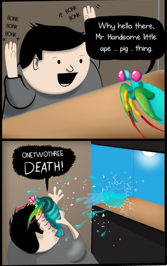

Fatos sobre o Stomatopoda
O quão curiosas são?
- capazes de interpretar espectro ultravioleta e infravermelho.
- São extremamente pequenas e perigosas.
- Possuem patas traseiras de defesa.
Visão
Os estomatópodes são predadores ativos que caçam presas com o auxílio de um sentido de visão muito apurado e capaz de interpretar polarização no espectro ultravioleta e infravermelho. A maioria das pessoas tem três tipos de células de detecção de luz, ou fotorreceptores, que são sensíveis à luz vermelha, verde e azul. Mas o camarão mantis tem de 12 a 16 fotorreceptores diferentes em sua banda média. A maioria das pessoas assume que, portanto, deve ser realmente boa em ver uma ampla gama de cores
Tamanho
Apresentam uma grande variação de tamanho, que pode ir de poucos milímetros até aproximadamente 40 cm nas espécies maiores.
Forma de caça
O segundo par de patas, muito desenvolvido, é usado tanto para atacar a presa como para se defender. As maiores esmagadoras, tais como exemplares de Odontodactylus scyllarus, são capazes de desferir um dos mais rápidos e violentos golpes do reino animal, um soco que pode apresentar a velocidade de um tiro calibre .22 (equivalente a 720 km/h) e uma pressão de impacto de 600 N/cm². Essa força esmagadora é a responsável pelo seu título de "lagosta-boxeadora" e é capaz de facilmente quebrar a carapaça de um caranguejo, as conchas duras e calcificadas de gastrópodes ou até mesmo quebrar o vidro reforçado de um aquário.